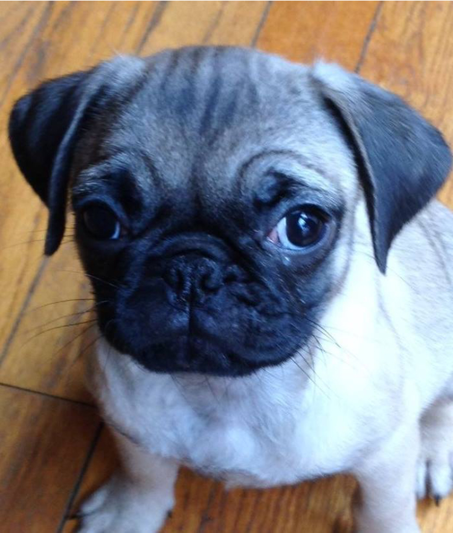

Sisters :)
Lucy and Rosie are one of a kind. They are each others best friends and are attached at the hip. They love to play with their toys together and enjoy each others company. Sometime they do fight and when they fight its very hard to break them up. I never knew pugs can have an aggressive side to them however, I was proven wrong when I saw them attack each other. They usually fight over food or the bones my mother gives them.
FUN FACTS:
- Rosie enjoys walks
- Lucy enjoys sleeping
- Pugs can live up to 15-20 years
- Lucy and Rosie are related, born from the same parents... different litter
- Pugs love to eat table food, however it is not good for their weight
- Most of the time Lucy and Rosie are inseparable

Here are Lucy and Rosie as little puppies!!
Homepage